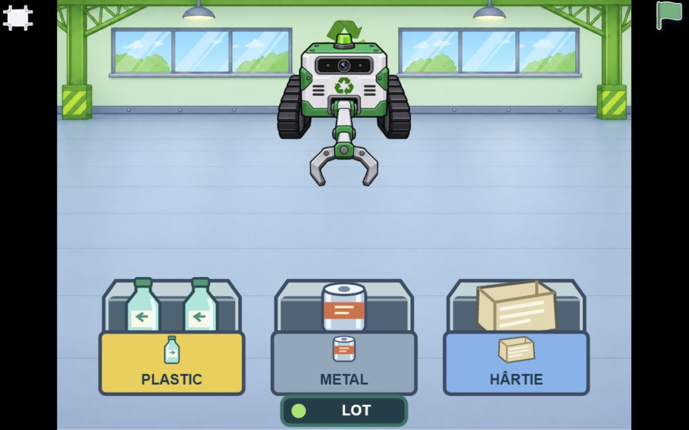
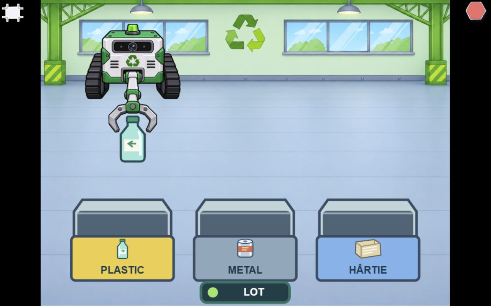

5–20 min
1. Prima sticlă
Robotul și sticla se deplasează împreună. Sticla rămâne în recipientul de plastic, iar robotul se întoarce gol.
Lecția 09 · 60 de minute · robotică pe ecran
După evenimentul din parc, ambalajele ajung amestecate la stația de sortare. Programăm robotul să le ducă în recipientele potrivite, să le depună și să revină gol. Două sticle trebuie să încapă una lângă alta.
Proiect de pornire fără cod · SJR
Plan + toate programele cu capturi · PDF · Ghidul profesorului

Primele 5 minute: poveste și demonstrație. Ultimele 5 minute: probă și salvare. Toți copiii lucrează și puzzle-ul greu.
5–20 min
Robotul și sticla se deplasează împreună. Sticla rămâne în recipientul de plastic, iar robotul se întoarce gol.
20–35 min
Adăugăm doza și hârtia. Trei comenzi aleg trei rute, executate pe rând.
35–55 min · dificil · pentru toți
Sticlă, hârtie, doză, sticlă. Un singur start și patru transporturi. A doua sticlă ocupă alt loc în același recipient.
Rezervă · +5–8 min
Pachetul este prea mare. Două micșorări îl pregătesc înainte de transport.
Rezervă · +8–10 min
După trei obiecte, robotul așteaptă operatorul. Golire eliberează recipientele, apoi pornește ultima sticlă.
Panoul trimite comenzi pentru obiecte cunoscute. Robotul și obiectul primesc aceleași deplasări. La recipient, obiectul mai coboară un pas, iar robotul se întoarce fără el.
Este un model cu rute programate: robotul nu recunoaște singur materialele și nu măsoară umplerea recipientelor. În R1 reprezentăm compactarea prin micșorare; în R2 operatorul comandă golirea.

PDF-ul are 17 pagini: plan concis, pregătire și capturi reale ale tuturor programelor la fiecare etapă, inclusiv firele neschimbate și ambele rezerve.
Ghid complet · PDF cu capturi · Lista proiectelor · PDF-ul cursului
Pe laptop, în ScratchJr Desktop Reborn: Open în galerie, alegi SJR-ul, apoi cardul stației. Folosește o fereastră lată. Steag pentru pornire; Stop și Steag pentru reluare.
Pe tablete pregătești numai starterul înaintea orei. Verifică importul și redeschiderea pe un Lenovo al școlii. Instrucțiuni complete.
Șase proiecte importate și redeschise în browser. Am verificat transportul comun, sortarea pe rând, pozițiile distincte ale sticlelor, returul gol, oprirea și reluarea, compactarea, pauza, golirea și butonul ascuns. Raport și dovezi.
Verificarea nu include un Lenovo fizic. Unele pictograme din portul web au necesitat reselectarea aceleiași valori; capturile PDF arată pictogramele complete.
Prezentare veche · Ghid vechi · PDF vechi · Cartonașe vechi · ZIP vechi.
Noua Lecție 10 este Robotul grădinar, într-un proiect separat.